English | Español | 日本語 | 中文 | Português
Previous Section (1. Getting Started) | Back to Table of Contents | Next Section (3. Programming with Music)
Music Blocks incorporates many common elements of music, such as pitch, rhythm, volume, and, to some degree, timbre and texture.
At the heart of Music Blocks is the Note value block. The Note value block is a container for a Pitch block that specifies the duration (note value) of the pitch.
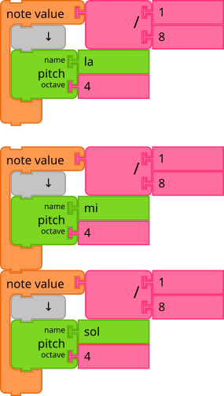
At the top of the example above, a single (detached) Note value
block is shown. The 1/8 is value of the note, which is, in this
case, an eighth note.
At the bottom, two notes that are played consecutively are shown. They
are both 1/8 notes, making the duration of the entire sequence
1/4.
RUN LIVE
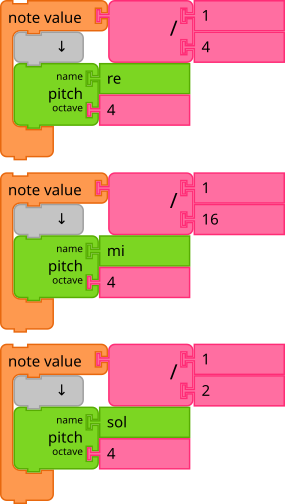
In this example, different note values are shown. From top to bottom,
they are: 1/4 for an quarter note, 1/16 for a sixteenth note, and
1/2 for a half note.
RUN LIVE
Note that any mathematical operations can be used as input to the Note value.
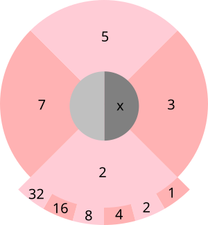
As a convenience, a pie menu is used for selecting common note values.
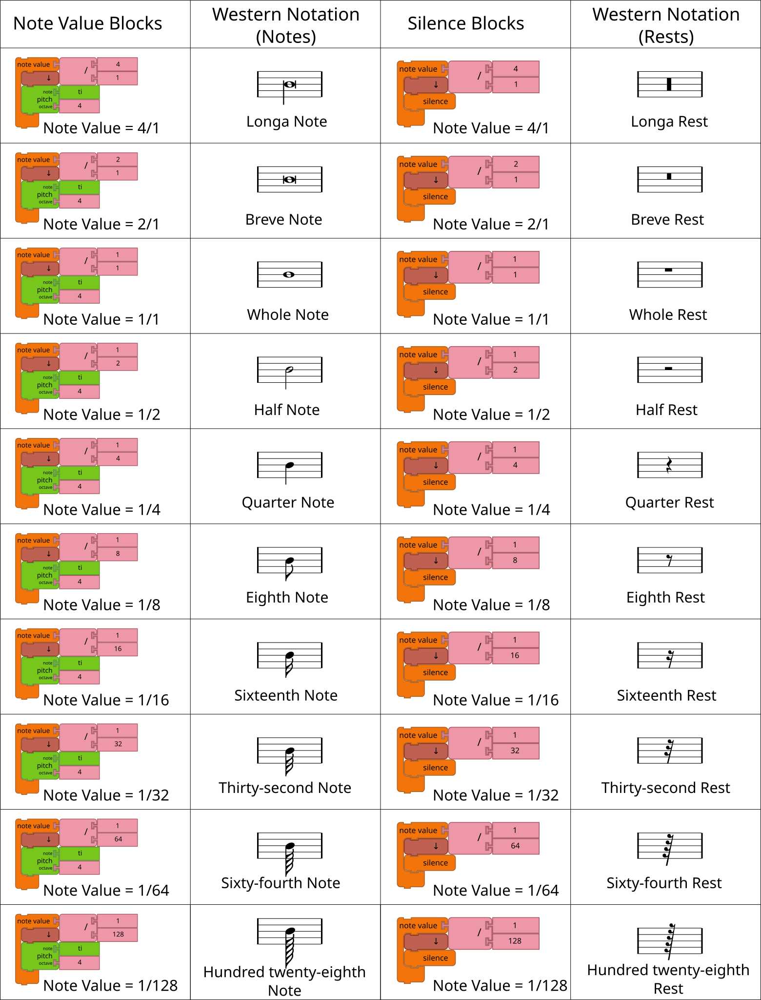
Please refer to the above picture for a visual representation of note values.
As we have seen, Pitch blocks are used inside the Note value blocks. The Pitch block specifies the pitch name and pitch octave of a note that in combination determines the frequency (and therefore pitch) at which the note is played.
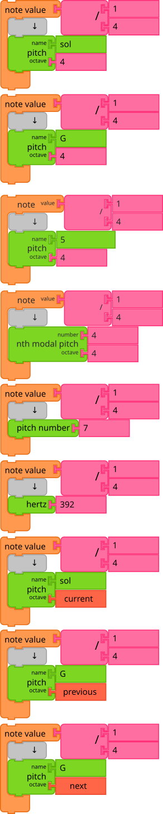
There are many systems you can use to specify a pitch block's name and octave. Some examples are shown above.
The top Pitch block is specified using a Solfege block (Sol in
Octave 4), which contains the notes Do Re Me Fa Sol La Ti.
The pitch of the next block is specified using a Pitch-name block
(G in Octave 4), which contains the notes C D E F G A B.
The next block is specified using a Scale-degree block (the 5th note
in the scale, 'G', also in 'Octave 4'), C == 1, D == 2, .... The
Scale-Degree block has numbers like the Number block, but also has
an accidental so that the user may play pitches outside a given key.
The next blocks is specified using a Nth Modal Pitch block. This
block takes a number argument and turns it into the "nth pitch of
a given scale" with an index of 0 (i.e. C for C major is 0). Therefore
in order to get G, we input the number 4. The octave argument will
force the octave up or down; otherwise the user may just keep going up
or down in either direction to go through scalar pitches of any mode.
The next block is specified using a Pitch-number block (the 7th
semitone above C in Octave 4 is G). The offset for the pitch
number can be modified using the Set-pitch-number-offset block.
The pitch of the next block is specified using the Hertz block in
conjunction with a Number block (392 Hertz is G in Octave 4),
which corresponds to the frequency of the sound made.
The octave is specified using a number block and is restricted to whole numbers. In the case where the pitch name is specified by frequency, the octave is ignored.The octave argument can also be specified using a Text block with values current, previous, next which does as 0, -1, 1 respectively.
The octave of the next block is specified using a current text block
(Sol in Octave 4).
The octave of the next block is specified using a previous text
block (G in Octave 3).
The octave of the last block is specified using a next text block
(G in Octave 5).
Note that the pitch name can also be specified using a Text block.
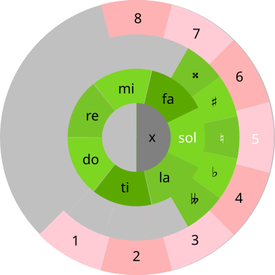
As a convenience, a pie menu is used for selecting pitch, accidental, and octave.
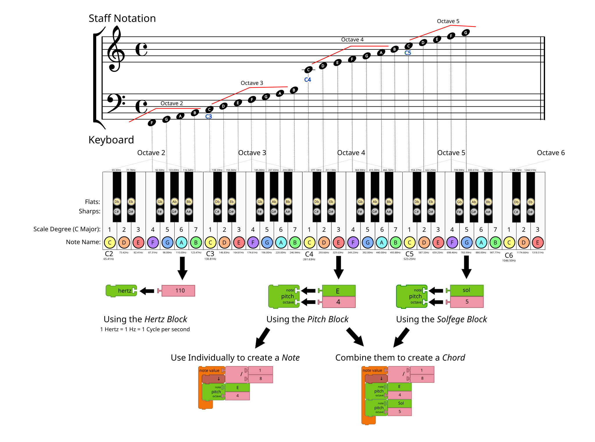
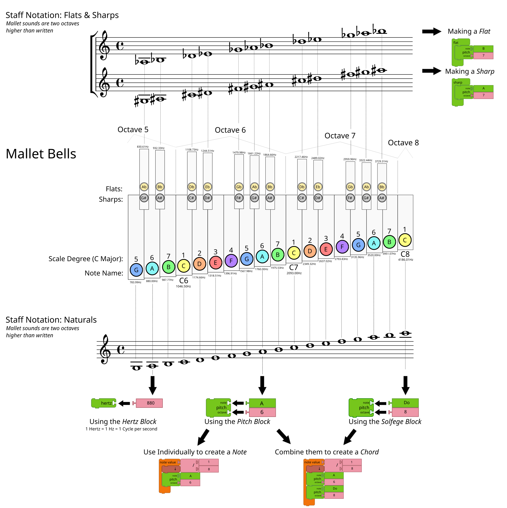
Please refer to the above charts for a visual representation of where notes are located on a keyboard or staff.
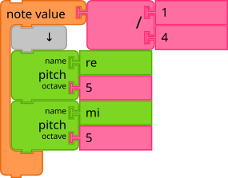
Multiple, simultaneous pitches can be specified by adding multiple Pitch blocks into a single Note value block, like the above example. RUN LIVE
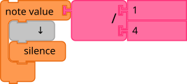
A rest of the specified note value duration can be constructed using a Silence block in place of a Pitch block. RUN LIVE
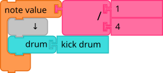
Anywhere a Pitch block can be used—e.g., inside of the matrix or a Note value block—a Drum Sample block can also be used instead. Currently there about two dozen different samples from which to choose. The default drum is a kick drum. RUN LIVE
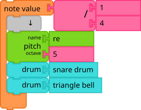
Just as in the multi-pitch example above, you can use multiple Drum blocks within a single Note value blocks, and combine them with Pitch blocks as well. RUN LIVE